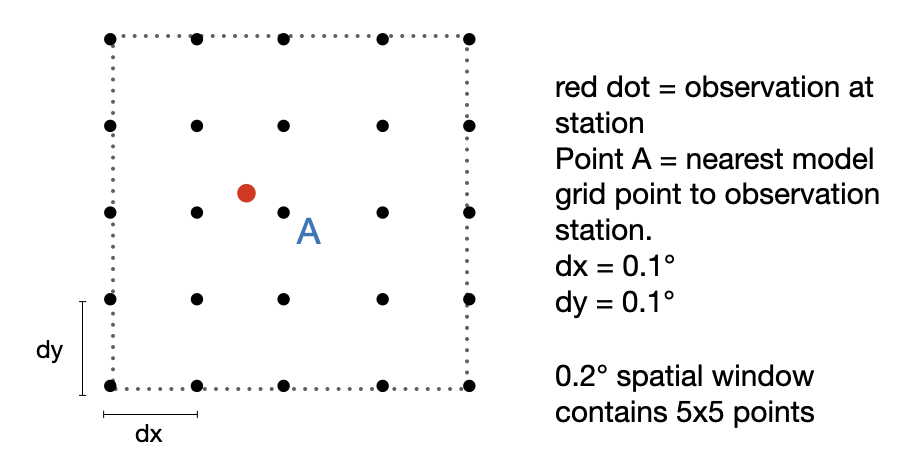
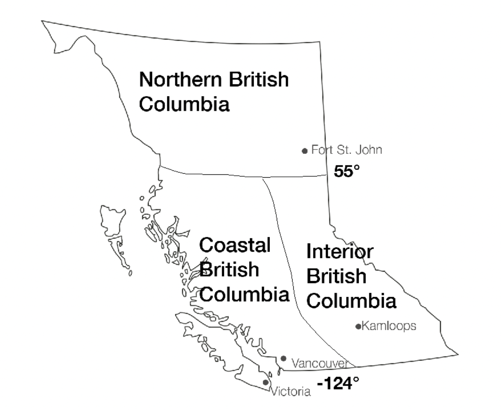
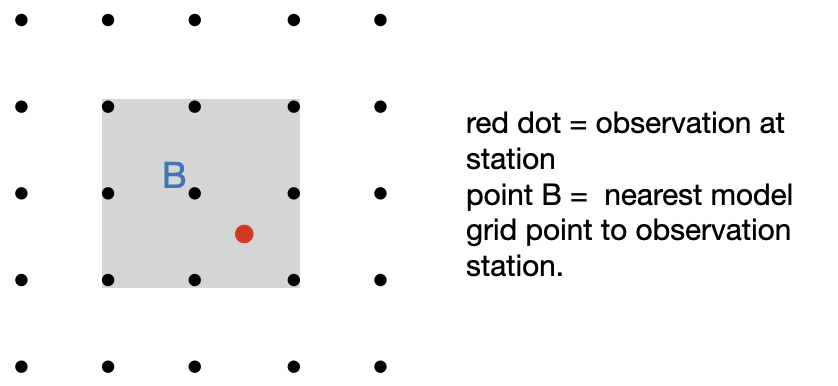

BlueSky Verification - Methodology
This verification webpage is to be used to compare the bluesky forecast with observations, as well as to look at some real-time statistics. There are three main parts to this page, the verification map, the statistics, and the individual traces. I will go through each section in detail below, including an explanation and the methodology behind each part.
Verification Map
This is a map showing the absolute difference between PM2.5 in the BlueSky Canada forecast and the PM2.5 observed at stations throughout BC. It can be interpreted as how well the smoke forecast did at observation stations for different windows in time and space. The plots are created with “plotly express”, an interactive graphing tool in python. The sliders give users the option to vary the time and spatial windows around the observation points. The scale on the right shows the difference and is split into coloured intervals based on how large the difference is. Red indicates that the difference is larger while green indicates that the difference is smaller. This difference should be interpreted as a better forecast if the absolute difference is smaller (green in colour), and a worse forecast if the absolute difference is greater (red in colour). This page can be helpful to look at how specific areas in BC are doing, or specific stations, at particular times during the forecast. The DateTime bar below the map can be scrolled, paused, and played to look at a specific time or period of time.
The time and spatial windows determine the period of time and space that the maps look at. The spatial and time windows are input to a padding function. This function collects a neighbourhood of data from the model centred around a given station. The values in the spatial data frame for the maps are illustrated in the grid below for a spatial window of 0.2°. The nearest neighbour to the observation point at the station (point A) is used as the centre of a grid that grows with the spatial window. Then, from this 2-d spatial array, the model value closest to the observation value is found.
The absolute difference between the station observation and this forecast output value for the specified window is used as the scale for the verification map. As the spatial and time windows increase, the absolute difference is usually smaller, and the forecasts are interpreted as being better. This is useful because for many interpretations of the BlueSky forecast, it does not matter where exactly the smoke is located. Instead, it is just as valuable to know that smoke is forecasted within 10 km. For example, for someone wondering whether their city will be smoky, knowing that smoke is forecasted within 10 km will be useful.
Verification Statistics
These statistics are useful to analyze how well the forecast has done on any given day. There are 5 statistics shown for each day: the mean absolute error, the root mean squared error, the accuracy, the hit rate, and the false alarm rate. To account for background smoke, I set the observations equal to observations - 10 ug/m^3 (observations’ = observations - 10 ug/m^3). Forecast values were left the same (Forecast’ = Forecast). There are statistics averaged over all of the stations in British Columbia, as well as split into three zones in British Columbia and averaged over each zone separately. The three zones can be seen below: Northern BC, Interior BC, and Interior BC.
The mean absolute error (MAE) and root mean squared errors (RMSE) are computed with the “sklearn.metrics” (scientific python kit) package in python. The mean absolute squared error looks at the absolute difference between the forecast and the observations, this will tell us if the forecast is over or under-performing. A small MAE suggests that the forecast has done well to predict the observations, and a larger MAE suggests that the forecast did not do a good job predicting the observations. A MAE of zero would mean that the forecast was perfect in predicting the PM2.5 observations at every point on a given day. The formula used for calculated the MAE is:
$$ MAE = \frac{1}{n} \sum |f - o| $$Where n = total number of stations, Σ = the sum of all of the data points, f = the forecast value, o = the observation values.
The Root-Mean Squared Error (RMSE) is the standard deviation of the residuals (the forecast errors). The RMSE essentially tells you how concentrated the data points are around a line of between the forecast and the observation points. The RMSE is calculated by squaring the residuals, finding the average of the residuals, and then taking the square root of that value. Again, the RMSE is calculated with the ‘sklearn.mettics’ package in python, with the formula below:
$$ RMSE = \sqrt \frac{ \sum_{i=1}^n (f - o)^2}{n} $$Where again, f = the forecast values at each station, o = the observed values at each station, and n = the number of stations.
To explain the method behind the hit rate, false alarm rate, correct negatives, and misses, I present the following table:
| Contingency Table | Observations' > 0 | ||
|---|---|---|---|
| Yes | No | ||
| Forecast' > 0 | Yes | Hits | False Alarms |
| No | Misses | Correct Negatives |
The three statistics that are showed on the page can be defined as:
- Accuracy = [(hits + correct negatives)/total]
- This tells us the fraction of forecasts that were correct overall
- Hit Rate = [hits/(hits + misses)]
- This tells us the fraction of observed "yes" events that were correctly forecast by location
- False Alarm Rate = [false alarms/(hits + false alarms)]
- This tells us the fraction of "yes" forecast results that were forecast when there was no smoke observed.
A higher accuracy, a higher hit rate, and a lower false alarm rate mean that the forecast is performing better.
Individual Station Verification
The individual station verification displays the raw observations of PM2.5 and the BlueSky smoke forecast + background PM2.5 at all stations in British Columbia. To account for background PM2.5 smoke, 10 μg/m3 is added to the forecast data. This value is based on a previous study of 41 stations in Alberta that Rosie Howard had done, where the mean background PM2.5 was found to range between 5 μg/m3 and 11 μg/m3. The observed PM2.5 is taken from recorded values from each station, available from the BC government air quality website. The BlueSky forecast that is displayed on this page is a 9-point grid point average. As shown below, for the grid point average, the nearest neighbour to the observation station point is found in the bluesky model data. Then, a 3x3 array of the bluesky model data with point B at the centre is created. The average of these nine points is calculated (the grey shaded box), which gives us the nine-point grid point average.
This section of the site is particularly useful if you are wondering about a specific time, or a particular station. The plots are created with plotly, an interactive graphing tool in python. The individual facet plots can be zoomed in by selecting a box of interest, and each plot will be zoomed to the same time range. The facet plots can also be scrolled horizontally and vertically to look at particular stations of interest.